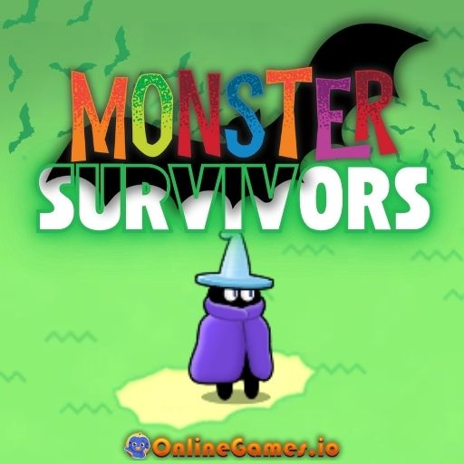

Monster Survivors
《怪物幸存者》是一款免费的在线生存游戏，采用极简主义设计和roguelite元素。
游戏说明
怪物来了，你必须活下来！好斗的螃蟹、怪异的南瓜、食肉植物，是的，甚至还有邪恶的蜜蜂！但在广阔的开阔地上，没有地方可以奔跑或躲藏。你所能做的就是尽可能长时间地生存下去，直到怪物的浪潮结束你的挣扎。在每次跑步中收集战利品以购买升级，增强你的幸存者，并帮助下一个幸存者站得更久。

Monster Survivors
★★★★☆
4.2
1 Player2DActionBattleCombatEmbeddableFantasyFreeRPGSurvivalWeapon
怪物幸存者是由FreezeNova带给你的。
2025年2月19日
玩法说明
当你被击败时，不要担心，并非一切都会浪费。拿起你的金币，在主菜单中升级幸存者的护甲、治疗、伤害和健康等级。这些升级将在会话之间保持不变。升级后的技能传递给下一个幸存者，以强势开始游戏。您还可以在主菜单中解锁新角色，例如生命值和伤害比更高的法师和战士。
操作说明
- 在《怪物幸存者》开始时，根据你喜欢的游戏风格选择你的武器：
- 钢剑：非常适合那些喜欢在激烈的战斗中，近距离切开敌人的人。
- 木棒：非常适合喜欢用魔法爆炸从远处攻击的玩家。
- 生存不仅仅涉及战斗；你还必须收集被击败的敌人掉落的战利品，以获得经验和力量。
- 站着不动不是一种选择，因为你需要不断地移动以获取宝贵的经验值，避免不知所措。
- 你可以选择在大圈子里奔跑，以阻挡敌人，同时让你高效地收集经验值。
- 当boss敌人出现时，游戏区域会缩小。准备好在更狭小的空间内躲避和战斗。
- 《怪物幸存者》有两张不同的地图，每张地图上都有独特的怪物：
- 梦幻森林：在令人难忘的美丽而危险的道路上开始你的生存之旅。
- 阴影宫：在梦幻森林中前进足够远，解锁这张地图，那里有更大的威胁等待着你。